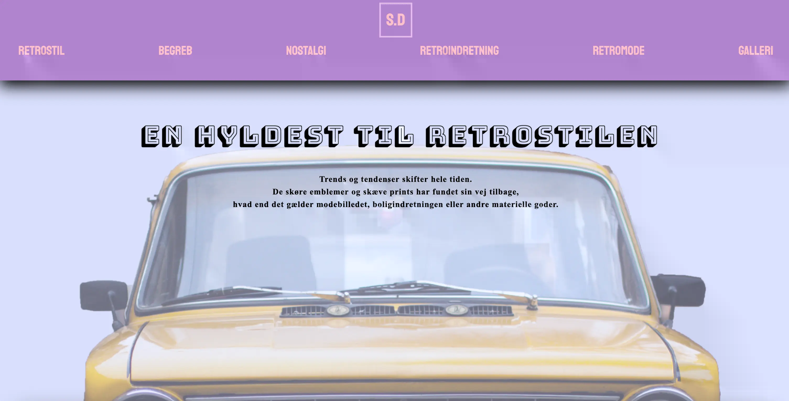
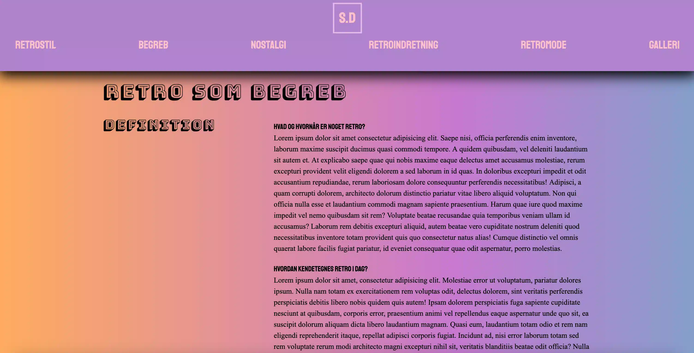
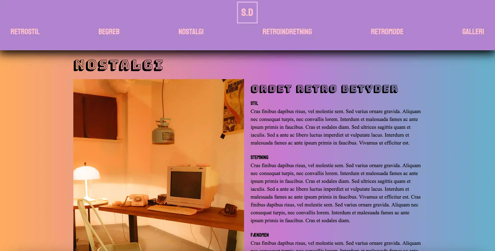
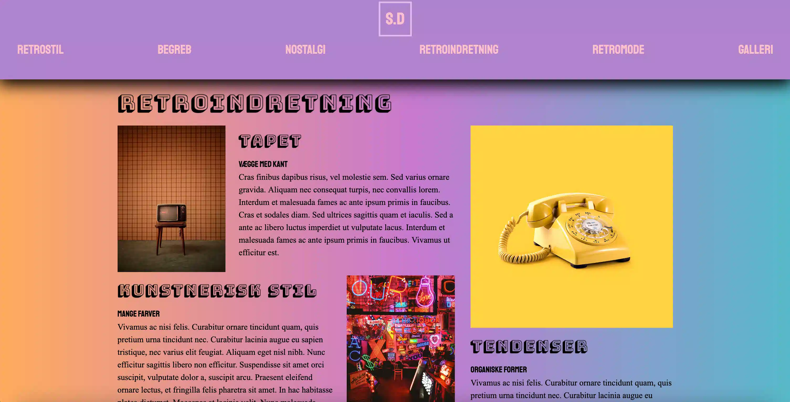
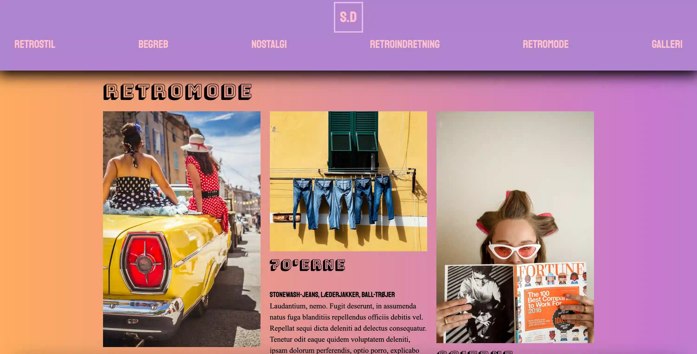
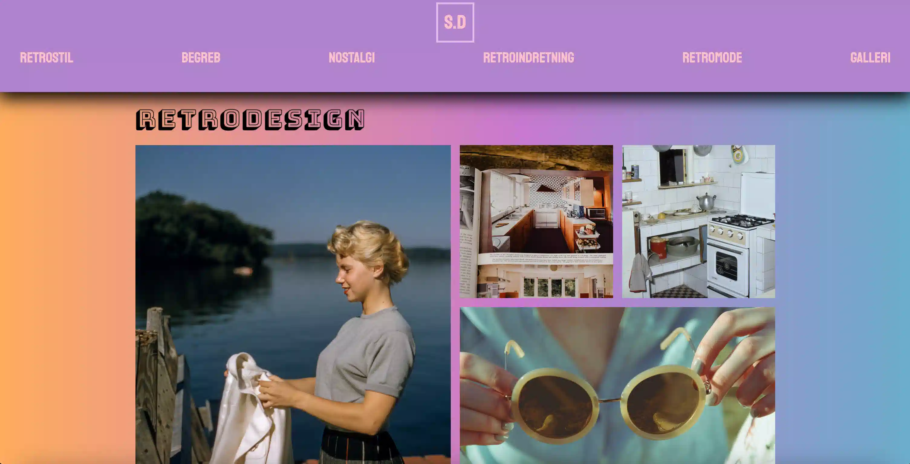

Grundlæggende web
I tema 02, grundlæggende HTML, var målet at lære at opbygge en simpel hjemmeside. Vi lære vigtigheden af mediaqueries, og hvordan vi skulle layoute den med CSS, så den passede både til desktop og mobile device.
Dette skulle vi gøre ud for en given stilart og et layoutdiagram, som skulle give os nogle retningslinjer i løbet af temaet. Jeg fik tildelt retrodesign, som blev hovedelementet for hjemmesidens visuelle udtryk. På baggrund af research og designanalyse, tog jeg udgangspunkt i den lidt forvirrende, holografiske stil jeg synes kendetegner stilarten.
Den holografiske stil blev grundstenen for mit splashbillede som på baggrund af farver og kontraster skal kommunikere klart og indholde hele essensen af sitet.





